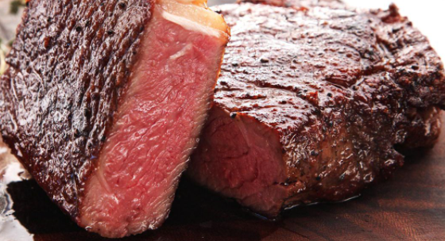

Sasha's Steak

Description
Makes one feel like a carnivourous caveman, and restores one's inner strength.
If you cook your steak more than medium rare than we are not friends.
Ingredients
Steps
- Season one side of the steak right before frying
- Fry one side of the steak
- Season the second side of the steak and flip
- Sit back and enjoy